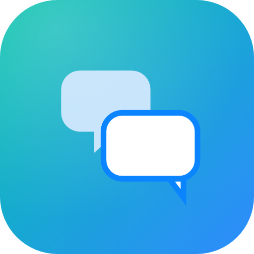

TraductorTraduce texto, voz y fotos 100% offline. Sin nube, sin cuentas, sin rastreo. Translate text, voice and photos 100% offline. No cloud, no accounts, no tracking.
La versión ligera descarga los modelos en el primer arranque (~650 MB). La FULL ya los lleva dentro: funciona sin conexión desde el primer segundo (ocupa ~1,8 GB instalada). The light version downloads the models on first run (~650 MB). The FULL one already bundles them: it works offline from the very first second (uses ~1.8 GB installed).
Traductor es una app nativa de Android que traduce texto, voz y fotos sin salir nunca del dispositivo.
Los modelos de inteligencia artificial se descargan una sola vez (primera ejecución, se recomienda Wi-Fi) y a partir de ahí todo —la traducción, el reconocimiento de voz, el OCR y la lectura en voz alta— ocurre en el teléfono. Puedes usarla en modo avión.
Traductor is a native Android app that translates text, voice and photos without ever leaving the device.
The AI models are downloaded once (first run, Wi-Fi recommended) and from then on everything —translation, speech recognition, OCR and read-aloud— happens on the phone. You can use it in airplane mode.
Detección automática y español, inglés, francés, alemán, italiano, portugués, ruso, chino, japonés, coreano, árabe, hindi, turco, neerlandés, polaco, ucraniano, rumano, búlgaro, húngaro…Auto-detect plus Spanish, English, French, German, Italian, Portuguese, Russian, Chinese, Japanese, Korean, Arabic, Hindi, Turkish, Dutch, Polish, Ukrainian, Romanian, Bulgarian, Hungarian…
Escribe o pega el texto; la traducción aparece al instante con selector de idioma origen/destino.Type or paste text; the translation appears instantly with source/target language selectors.
ASR Whisper + detector de voz (VAD): pulsa el micro, habla con naturalidad y se recorta solo lo que hablas.Whisper ASR + voice activity detection (VAD): tap the mic, speak naturally, and only speech is captured.
Cámara o galería. El texto se reconoce offline, queda editable y se traduce.Camera or gallery. Text is recognized offline, stays editable and gets translated.
Voces neuronales Piper para los 32 idiomas (ES/EN/FR/DE/IT/PT/RU/ZH/JA/KO/AR/HI/TR/NL/PL/UK/RO/BG/HU/SV/DA/FI/NO/CS/EL/HE/FA/ID/VI/TH/BN/CA): femeninas por preferencia, masculinas solo si son la única voz del idioma o todas sus voces son masculinas (AR/TR/BG/RO/DA/FA/FI/HE). Motor del sistema como reserva.Piper neural voices for all 32 languages (ES/EN/FR/DE/IT/PT/RU/ZH/JA/KO/AR/HI/TR/NL/PL/UK/RO/BG/HU/SV/DA/FI/NO/CS/EL/HE/FA/ID/VI/TH/BN/CA): female by preference, male only when it's a language's only voice or all its voices are male (AR/TR/BG/RO/DA/FA/FI/HE). System engine as fallback.
Tus traducciones se guardan localmente y puedes volver a consultarlas.Your translations are stored locally and can be revisited.
Descarga o importa modelos GGUF, Whisper y voces Piper desde Ajustes.Download or import GGUF, Whisper models and Piper voices from Settings.
Nada sale del teléfono. Sin anuncios, sin analíticas, sin servidores.Nothing leaves the phone. No ads, no analytics, no servers.
Un único pipeline (Kotlin) alimenta el motor local (C++/JNI). A single pipeline (Kotlin) drives the local engine (C++/JNI).
whisper.cpp la transcribe offline al idioma origen. — if the input was speech, whisper.cpp transcribes it offline in the source language.llama.cpp ejecuta el modelo Qwen3.5-0.8B con un prompt de traducción; se limpia el resultado. — llama.cpp runs the Qwen3.5-0.8B model with a translation prompt; the output is cleaned up.text ─────────▶ ┌────────────────────┐ ┌──────────────┐
mic ─▶ VAD ────▶ │ TranslationPipeline│ ─────▶ │ llama.cpp │ Qwen3.5 GGUF
photo ─▶ OCR ───▶ └────────────────────┘ └──────────────┘
│ ┌──────────────┐
└─────────────────────▶ │ whisper.cpp │ Whisper ASR
└──────────────┘
ONNX Runtime: Silero VAD · PaddleOCR sherpa-onnx: Piper TTSLa primera vez, la app descarga los modelos (~700 MB en total) y los guarda en su almacenamiento privado. Después ya no necesita red.
On first run the app downloads the models (~700 MB in total) into its private storage. After that it no longer needs the network.
| ComponenteComponent | ModeloModel | Tamaño aprox.Approx. size |
|---|---|---|
| TraducciónTranslation | Qwen3.5-0.8B Q4_K_M (GGUF) | ~503 MB |
| Voz (ASR)Speech (ASR) | Whisper ggml-tiny / base / small | 74 – 465 MB |
| VAD | Silero VAD (ONNX) | ~2,2 MB |
| OCR | PaddleOCR PP-OCRv6 tiny (det + rec) | ~6 MB |
| TTS | Voz Piper (es/en/fr/de/it/pt/ru/zh/ja/ko/ar/hi/tr/nl/pl/uk/ro/bg/hu/sv/da/fi/no/cs/el/he/fa/id/vi/th/bn/ca…)Piper voice (es/en/fr/de/it/pt/ru/zh/ja/ko/ar/hi/tr/nl/pl/uk/ro/bg/hu/sv/da/fi/no/cs/el/he/fa/id/vi/th/bn/ca…) | ~25 – 110 MB |
Todos los modelos se pueden importar manualmente desde el almacenamiento si ya los tienes. En Ajustes puedes ver, activar y borrar cada modelo. Every model can also be imported manually from storage if you already have it. In Settings you can view, activate and delete each model.
Traducción, voz, OCR y TTS se ejecutan en el dispositivo. Nunca se sube texto, audio ni imágenes.Translation, speech, OCR and TTS run on the device. Text, audio and images are never uploaded.
Sin cuentas, sin analíticas, sin anuncios, sin publicidad.No accounts, no analytics, no ads.
La conexión se usa únicamente para descargar modelos desde repositorios oficiales (HuggingFace / GitHub).The connection is used only to download models from official repositories (HuggingFace / GitHub).
INTERNET, RECORD_AUDIO y CAMERA (opcional). La galería usa el selector del sistema, sin permisos.INTERNET, RECORD_AUDIO and CAMERA (optional). The gallery uses the system picker, with no permissions.
Requisitos: JDK 17, Android SDK 35, NDK 27.0.12077973, CMake 3.22.1. Las librerías nativas (llama.cpp y whisper.cpp) se compilan con el NDK en arm64-v8a.
Requirements: JDK 17, Android SDK 35, NDK 27.0.12077973, CMake 3.22.1. The native libraries (llama.cpp and whisper.cpp) are built with the NDK for arm64-v8a.
# 1. Native libraries / Librerías nativas
./scripts/fetch-deps.sh
./scripts/build_native.sh
# 2. The app / La app
./gradlew :app:assembleDebug
./gradlew :app:testDebugUnitTest
# 3. Install / Instalar
adb install -r app/build/outputs/apk/debug/app-debug.apkAPK de depuración: app/build/outputs/apk/debug/app-debug.apk (solo arm64-v8a).Debug APK: app/build/outputs/apk/debug/app-debug.apk (arm64-v8a only).
Traductor se apoya en proyectos de código abierto:Traductor stands on open-source projects:
| ProyectoProject | UsoUse | LicenciaLicense |
|---|---|---|
| llama.cpp | Inferencia LLM localLocal LLM inference | MIT |
| whisper.cpp | Reconocimiento de vozSpeech recognition | MIT |
| sherpa-onnx | Runtime de Piper TTSPiper TTS runtime | Apache-2.0 |
| PaddleOCR | OCR de fotosPhoto OCR | Apache-2.0 |
| ONNX Runtime | VAD + OCRVAD + OCR | MIT |
| Piper / espeak-ng | Voces neuronalesNeural voices | MIT / GPL-3.0 |
| Qwen3.5-0.8B | Modelo de traducciónTranslation model | Apache-2.0 |